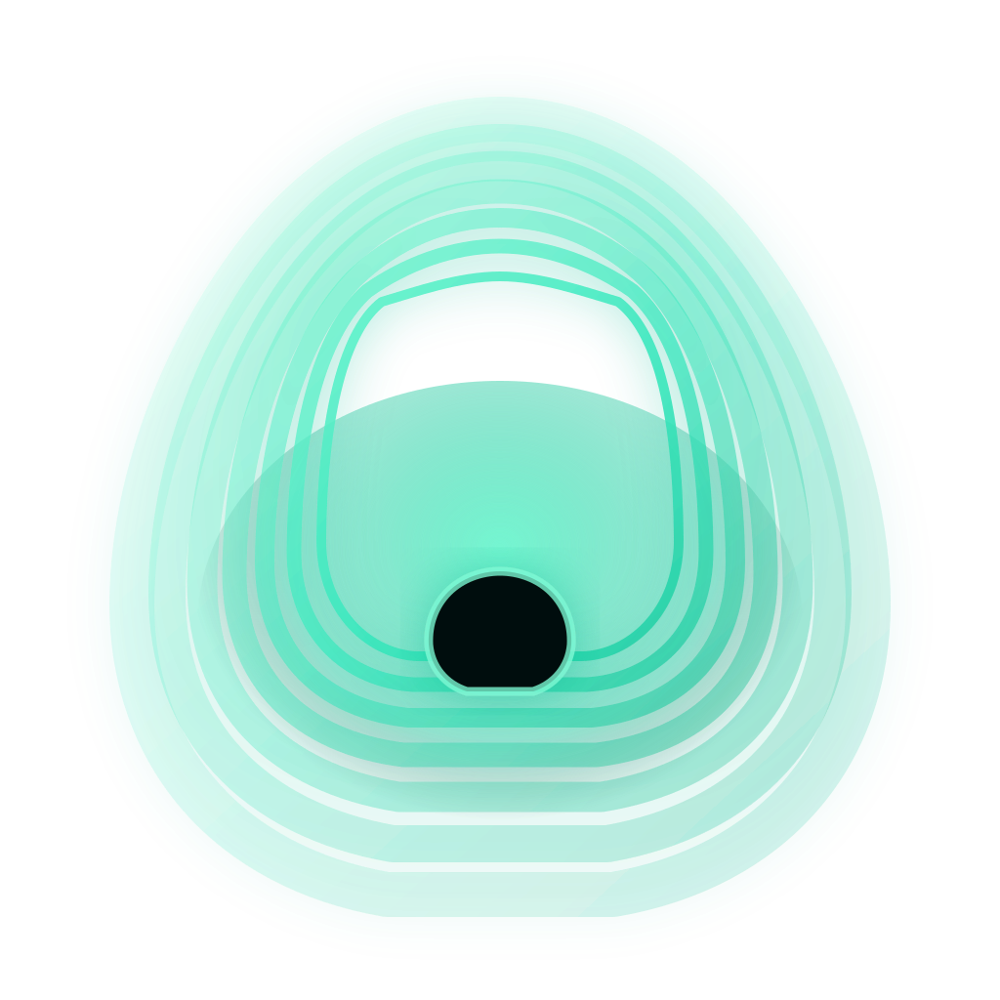
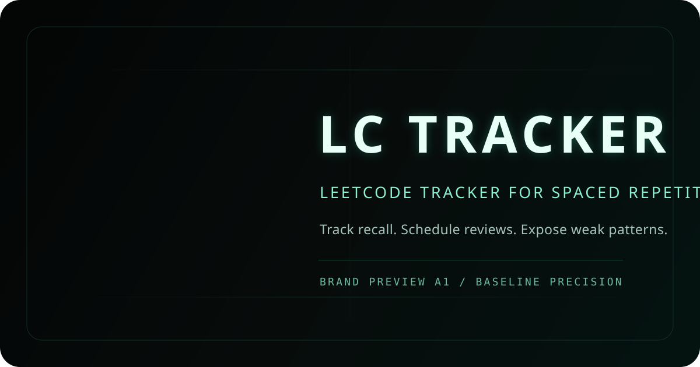
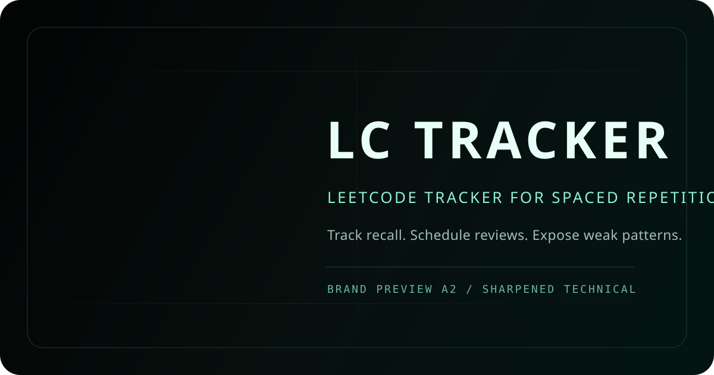
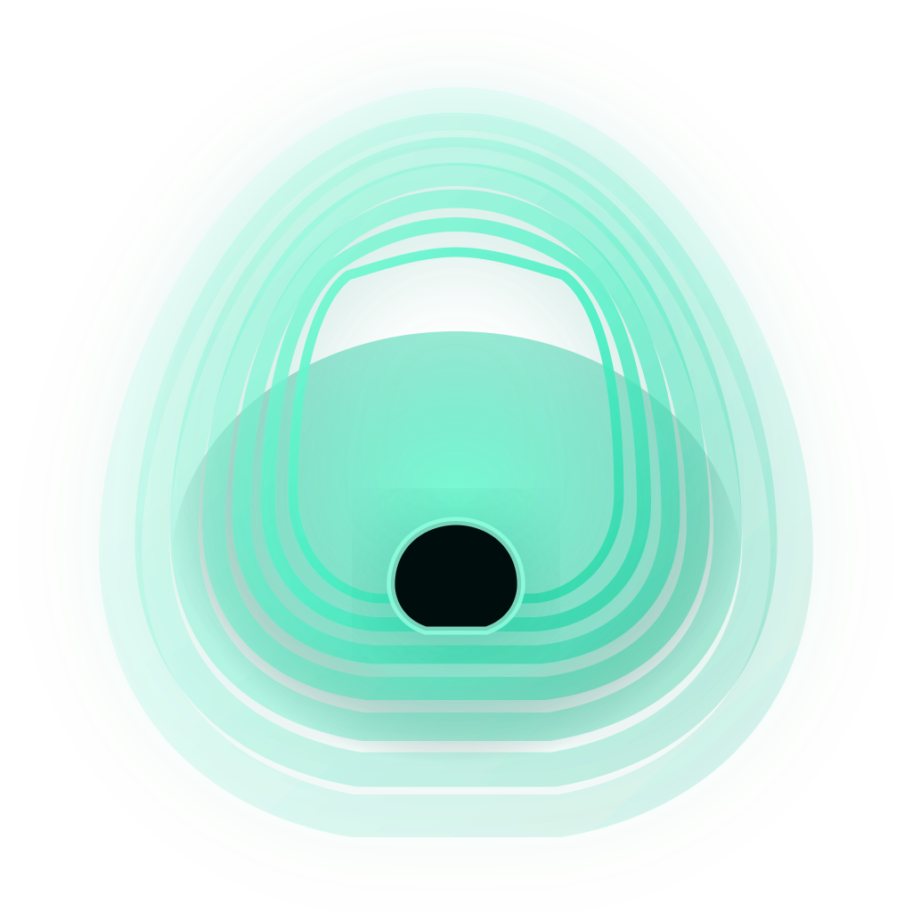
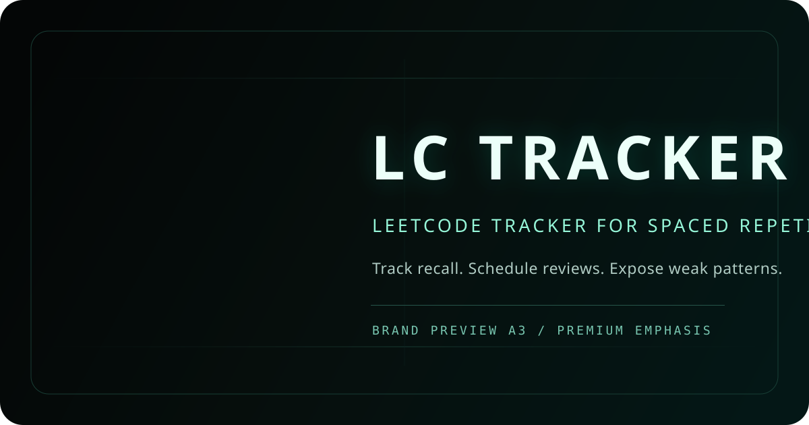

Reference balance model. Preserves rounded contour flow and small center cutout. Glow is assertive but constrained.

Phase 0 package for approval only. Production assets remain unchanged. Compare icon legibility and OG composition across controlled variants.

Reference balance model. Preserves rounded contour flow and small center cutout. Glow is assertive but constrained.

Angular precision variant. Slightly reduced glow and narrower center aperture for a stricter technical read.


Same core geometry with stronger atmospheric glow and wider wordmark spacing for a premium technical signature.
